Reporting Examples using ksTFL
ksTFL Team
Reporting_Examples_with_ksTFL.Rmd
This vignette presents a realistic progression of reporting examples
— from minimal tables/listings/figures/text to a full clinical-style
table with multi-level headers, spanning stub columns, multi-line
titles/footnotes, reusable styles, and session defaults. All examples
use exported ksTFL helpers only; set eval=TRUE locally to
run the R chunks.
Category and scope
This is an applied workflow vignette.
- Audience: users who already know the basic pipeline and want practical templates
- Focus: end-to-end report assembly patterns you can adapt directly
- Outcome: production-oriented examples for table, figure, text, and multi-spec workflows
Related vignettes:
- Getting Started — pipeline overview and all core concepts
- Styling Guide — complete style reference and built-in atoms
- Advanced StyleRows — deep dive
into compute_cols(), c_glue(),
c_clear()
- Column Width Management — width locking, auto-calculation, invisible columns
Workflow overview
This vignette follows a consistent end-to-end pattern for each example so you can reproduce the full reporting pipeline locally:
- Prepare small, self-contained sample data (run the setup chunk with
eval=TRUE). - Build
TFL_specobjects usingcreate_table(),create_figure()orcreate_text(). - Tune columns and styles via
define_cols()andadd_style()(usef_combine()to reference combined styles). - Assemble specs into a
TFL_reportwithcreate_report()(this consolidates style references and assignsdataRef). - Render to a DOCX with
write_doc()(one-step: saves JSON metadata and produces the final document).
Best practices:
- Use named styles (
add_style()) and reference them by id; avoid inspecting or mutating internal fields. - Use
print(spec)for concise, user-facing previews rather than reading internals. Or use package provided Addins - Use
metaPath = tempdir()during examples to avoid writing permanent files while you experiment.
# Sample datasets used by multiple sections (run locally before executing examples)
set.seed(2025)
demog_tbl <- data.frame(
subject_id = sprintf("S%03d", 1:24),
age = sample(25:80, 24, TRUE),
sex = sample(c("M","F"), 24, TRUE),
trt = sample(c("Placebo","DrugA"), 24, TRUE),
stringsAsFactors = FALSE
)
vitals_tbl <- data.frame(
subject_id = rep(demog_tbl$subject_id, each = 2),
visit = rep(c("Baseline","Week 12"), times = 24),
sbp = round(rnorm(48, 120, 12)),
dbp = round(rnorm(48, 75, 8)),
stringsAsFactors = FALSE
)
labs_tbl <- data.frame(
subject_id = demog_tbl$subject_id,
ALT = round(rnorm(24, 28, 9)),
AST = round(rnorm(24, 26, 8)),
stringsAsFactors = FALSE
)
# Example plot file (created locally when running the vignette)
# type = "cairo" avoids needing an X11 display (headless-safe for pkgdown/CI)
plot_file <- file.path(tempdir(), "example_plot.png")
png(plot_file, width = 600, height = 400, type = "cairo")
plot(demog_tbl$age, vitals_tbl$sbp[1:24], xlab = "Age", ylab = "SBP", main = "Age vs SBP")
dev.off()
## Session-wide package and document settings:
tfl_reset_options()
tfl_set_options(
add_header(c("CRO Example LLC.", "CONFIDENTIAL", "Page {PAGE} of {NUMPAGES}")),
add_header("Study: Miracle Drug 001"),
add_footer(c("Showcase examples", "Program: inst/examples/showcase")),
output_directory = out_dir,
footnotePlace = "repeated",
meta_directory = file.path(out_dir, "meta")
)1 — Simple minimal table
spec_min_table <- create_table(data = demog_tbl, cols = c(subject_id, age, sex, trt))
spec_min_table <- add_title(spec_min_table, "Demographics (minimal)")
# Print shows a compact overview (useful in interactive sessions)
print(spec_min_table)
# close the example chunkprint() on a TFL_spec provides a readable overview including titles and defined columns:
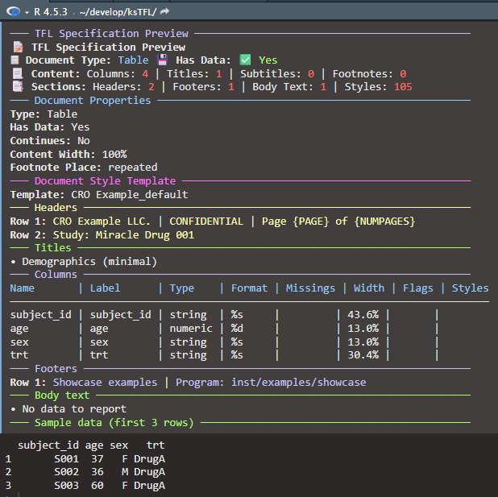
# End-to-end: wrap single spec into a report and render to DOCX
rpt_min_table <- create_report(spec_min_table)
write_doc(rpt_min_table, name = "tbl_min")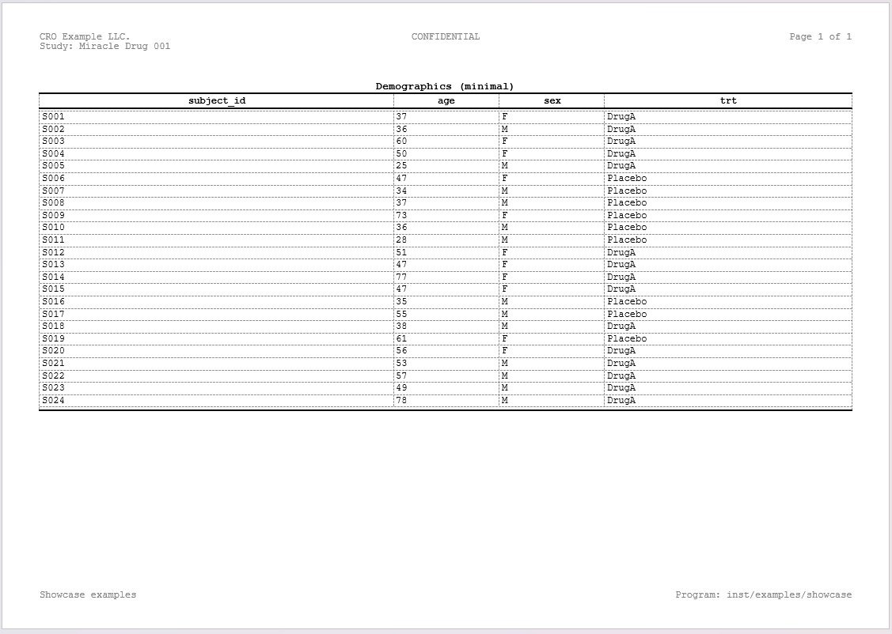
A note on the
colsparameter — Thecolsargument increate_table()specifies which columns are rendered in the document and their left-to-right order. It acts purely as a presentation directive: the underlying data frame is stored in full, so columns omitted fromcolsare not dropped from the spec. They remain available for conditional logic incompute_cols(). For instance, you could exclude a helper column likeflagfrom the report (cols = c(subject_id, age, sex, trt)) yet still referenceflagin acompute_cols()condition to drive styling or value transformations. This design means you never need to pre-filter or reorder your data frame before passing it to ksTFL —colshandles column selection and ordering in one place.
2 — Simple minimal figure
spec_min_fig <- create_figure(plot_file)
spec_min_fig <- add_title(spec_min_fig, "Example: Age vs SBP")
print(spec_min_fig)
# close example chunk
# End-to-end: render the single-figure report to DOCX
rpt_min_fig <- create_report(spec_min_fig)
write_doc(rpt_min_fig, name = "fig_min")3 — Simple minimal text (narrative)
## Narrative object:
nartv <- list(
subj = 'ABC-001',
enrldt = '01JAN2022',
compldt = '22JUN2022',
discreas = 'Completed per protocol',
nae = 3,
listae = list('Nausea', 'Vomiting', 'Headache')
)
## Formatted text of the subject narrative:
text <- sprintf('The subject <b>%s</b> entered study %s and discontinued the study %s with a reason <i>"%s"</i>.<br>During the treatment period subject had the following %d AEs:<br><b>- %s</b>',
nartv[["subj"]],
nartv[["enrldt"]],
nartv[["compldt"]],
nartv[["discreas"]],
nartv[["nae"]],
paste(nartv[["listae"]], collapse = '<br>- ')
)
# End-to-end: render the narrative report to DOCX
spec_min_text <- create_text() |> add_title("Sample Narrative Text")
spec_min_text <- add_body_text(spec_min_text, text)
rpt_min_text <- create_report(spec_min_text)
write_doc(rpt_min_text, name = "nar_min")4 — Define columns: single, batch, and parameter recycling
Why define_cols()?
After creating a table with create_table(), column
properties are auto-detected from the data. However, you often need to:
- Customize column labels for readability - Specify numeric formats
(e.g., “%.2f” for 2 decimal places) - Control visibility, styling, or
special behaviors (ID column, deduplicate, page breaks) - Lock or adjust
column widths for better layout
define_cols() is the primary tool for these
customizations. It supports both single-column and
batch updates, with intelligent parameter
recycling to keep code concise.
Example 1: Single column definition
The simplest case — modify one column at a time:
# Define one column
spec_single <- create_table(data = demog_tbl, cols = c(subject_id, age, sex, trt))
spec_single <- define_cols(spec_single, subject_id, label = "Subject ID", isID = TRUE)
# Another single column call (chaining is encouraged)
spec_single <- define_cols(spec_single, age,
label = "Age (years)",
type = "numeric",
format = "%.0f")
print(spec_single)
# close example chunkExample 2: Batch update with single value (recycling to all columns)
Update multiple columns with the same value — the value is automatically recycled:
# Apply single format to multiple columns
spec_batch <- create_table(data = vitals_tbl, cols = c(sbp, dbp))
spec_batch <- define_cols(spec_batch, c(sbp, dbp),
type = "numeric", # Applied to both
format = "%.1f", # Applied to both
valueStyleRef = "b") # Applied to both
print(spec_batch)
# close example chunkWhy this matters: Instead of writing three separate
define_cols() calls, you write one line and the package
applies the same values to all selected columns.
Example 3: Batch update with per-column values (1-to-N mapping)
Update multiple columns with different values — provide a vector matching the number of columns:
# Different label and format for each column
spec_mapped <- create_table(data = demog_tbl, cols = c(age, sex, trt)) |>
define_cols(c(age, sex, trt),
label = c("Age (years)", "Biological Sex", "Treatment Group"),
type = c("numeric", "string", "string"),
format = c("%.0f", NA, NA) #format not applicable for strings -> NA
)
print(spec_mapped)
# close example chunkImportant: The vector length must match exactly:
- Length 1: applies to all columns
- Length N (where N = number of columns): applies one-to-one
- Any other length: raises an error
Example 4: Multiple define_cols() calls (chaining with
|>)
Combine define_cols() calls to layer customizations —
each call merges with previous settings (last-win strategy):
# Start with basic table
spec_chain <-
create_table(data = demog_tbl, cols = c(subject_id, age, sex, trt)) |>
# First pass: set all labels
define_cols(c(subject_id, age, sex, trt),
label = c("Subject ID", "Age", "Sex", "Treatment")) |>
# Second pass: set numeric formatting for age
define_cols(age, type = "numeric", format = "%.0f") |>
# Third pass: mark subject_id as ID column (repeats on page breaks)
define_cols(subject_id, isID = TRUE)
print(spec_chain)
# close example chunkThis approach makes it easy to:
- Define labels first (human-readable column names)
- Then apply formatting (numeric/string types, decimals)
- Then apply special behavior flags (ID, deduplicate, etc.)
5 — Set document properties (hasData, content width, placement)
Key function: set_document()
-
hasData: Whether document contains data (important for Text specs)
- footnotePlace: Control placement of titles, footnotes,
and subtitles
- contentWidth: Content width (e.g., “100%”, “6.5in”,
“16.51cm”)
- isContinues: Ignore page breaks between sections
Example 1: hasData flag
spec <- create_table(demog_tbl) #automatically detects if dataframe has any rows
# When data frame does not have any rows, the report will show the default body_text placeholder instead of empty table.
#body text can be manually specified
spec <- set_document(spec,
hasData = FALSE) #override autodetected value
print(spec)Example 2: Content width and placement
spec <- create_table(demog_tbl)
spec <- set_document(spec,
contentWidth = "95%", # Narrower content (default 100%)
footnotePlace = "repeated") # Footnotes on every pageNotes:
- Most defaults are sensible; you typically only need
set_document() for content width
- Multiple calls merge with last-win strategy (later calls override earlier ones)
6 — Combine table/figure/text into a single report
report_simple <- create_report(spec_min_table, spec_min_fig, spec_min_text)
# Render combined simple report to DOCX
write_doc(report_simple, name = "report_simple")Notes: create_report() preserves input order and
consolidates styles. Additionally, with toc = TRUE
parameter the table of contents can be generated [in order this to work
the titles in the input specs should be marked for toc entries - see
?add_title]
7 — Column widths: automatic calculation and locking
How automatic column width works
When you create a table with create_table(), ksTFL
automatically analyzes the data and distributes column widths
proportionally:
- Initial analysis: For each column, the package examines data values (length, type, number of decimals)
- Width calculation: Numeric columns typically get wider if they have many decimals or large values; short text columns get narrower
- Proportional distribution: All widths are normalized to sum to 100% (or remaining available width)
-
Default:
autoColWidth = TRUEin package options (can be changed withtfl_set_options())
Example: A table with columns id (short
numeric), description (long text), value
(numeric): - Auto-detected widths might be: id = 20%,
description = 50%, value = 30%
Example 1: Accept auto-calculated widths
The simplest approach — let the package handle width distribution:
# Create table; widths are auto-calculated from data characteristics
spec_auto <- create_table(data = labs_tbl, cols = c(subject_id, ALT, AST))
spec_auto <- define_cols(spec_auto, c(subject_id, ALT, AST),
label = c("Subject ID", "ALT (U/L)", "AST (U/L)"))
# Print to see auto-calculated widths
print(spec_auto)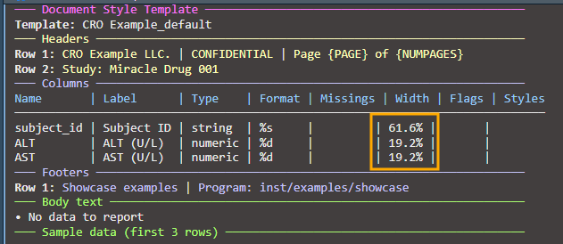
Example 2: Lock one column, auto-adjust others
Lock a specific column width while others recalculate to fill remaining space:
# Lock subject_id at 15%, let ALT and AST split the remaining 85%
spec_lock1 <- create_table(data = labs_tbl, cols = c(subject_id, ALT, AST))
spec_lock1 <- define_cols(spec_lock1, subject_id,
label = "Subject ID",
colWidth = "15%") # Lock at 15%
# When auto-recalculation runs (automatic), ALT and AST widths are recalculated
# to maintain their initial proportion while filling the remaining 85%
print(spec_lock1)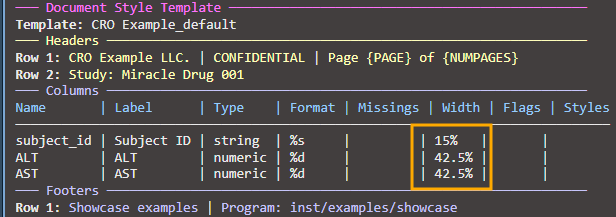
Example 3: Lock multiple columns with relative widths
Lock several columns and let others auto-adjust:
# Lock two columns, let the third auto-adjust
spec_lock_multi <- create_table(data = labs_tbl, cols = c(subject_id, ALT, AST))
spec_lock_multi <- define_cols(spec_lock_multi, subject_id,
label = "Subject ID",
colWidth = "12%")
spec_lock_multi <- define_cols(spec_lock_multi, ALT,
label = "ALT (U/L)",
colWidth = "40%")
# AST automatically fills remaining 48% (100% - 12% - 40%)
print(spec_lock_multi)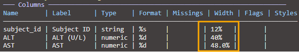
Example 4: Mixed units (percentages and absolute)
Combine percentage-based widths with absolute units:
# Lock subject_id at 2 cm, others in percentages
spec_mixed <- create_table(data = labs_tbl, cols = c(subject_id, ALT, AST))
spec_mixed <- define_cols(spec_mixed, subject_id,
label = "Subject ID",
colWidth = "2cm") # Absolute width
spec_mixed <- define_cols(spec_mixed, ALT,
label = "ALT (U/L)",
colWidth = "35%") # Percentage of remaining
print(spec_mixed)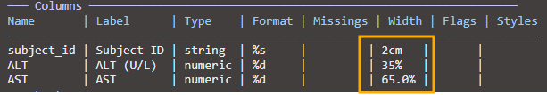
Important: When mixing units (cm, in, pt) with percentages, the absolute widths are reserved first, then percentages are calculated from remaining space.
Example 5: Width validation and constraints
The package validates column widths to prevent invalid configurations:
spec_valid <- create_table(data = labs_tbl, cols = c(subject_id, ALT, AST))
# VALID: Set a reasonable relative width
spec_valid <- define_cols(spec_valid, ALT,
colWidth = "30%") # OK: 30% is valid
# INVALID: Cannot set 100% relative width (leaves no space for other columns)
# This will raise an error:
# spec_valid <- define_cols(spec_valid, ALT, colWidth = "100%")
# Error: relative width 100.0% exceeds maximum allowed 75.0%
# (accounting for locked columns and minimum 0.5% for other columns)
# INVALID: Cannot set width below minimum threshold
# spec_valid <- define_cols(spec_valid, AST, colWidth = "0.2%")
# Error: relative width 0.2% is below minimum 0.5%
# Minimum width constraints (can be customized via package options):
# - Relative widths (%): minimum 0.5%
# - Fixed widths (cm, in, pt): minimum 0.2cm (~2mm, ~0.08in)
# Configure minimum width via package options:
tfl_set_options(minColWidth = 1.0) # Set minimum relative width to 1.0%
# Now 0.5% will fail, but 1.0% will succeed
spec_valid <- define_cols(spec_valid, AST,
colWidth = "1.0%") # OK with new minimum
print(spec_valid)Width validation rules:
- Relative width (%): Must be ≥
minColWidth (default 0.5%)
- Relative width (%): Cannot exceed max allowed considering locked columns and other column minimums
- Fixed width: Must be ≥ 0.2cm (all units: cm, in, pt, mm automatically converted)
- Incompatible widths: Cannot set width to 100% (would exclude all other columns)
Error messages are detailed and show the maximum allowed width when you exceed limits:
Error: relative width 100.0% exceeds maximum allowed 75.0%
(accounting for 2 locked columns requiring 25% total,
and minimum 0.5% for remaining 1 unlocked column)8 — Table with titles, subtitles and footnotes
spec_multi <- create_table(data = labs_tbl, cols = c(subject_id, ALT, AST))
spec_multi <- add_title(spec_multi, "Laboratory Results")
spec_multi <- add_subtitle(spec_multi, "Selected hepatic enzymes by subject")
spec_multi <- add_footnote(spec_multi, "Values are shown as observed.")
spec_multi <- define_cols(
spec_multi,
c(subject_id, ALT, AST),
label = c("Subject ID", "ALT (U/L)", "AST (U/L)")
)
print(spec_multi)
# close example chunk
# Render the multilevel table to DOCX
rpt_multi <- create_report(spec_multi)
write_doc(rpt_multi, name = "tbl_multi")9 — span columns (spanning headers)
Why spanning headers?
In clinical tables, you often need to group related columns under a
common header. For example: - “Baseline” spanning columns:
visit, sbp, dbp,
pulse - “Week 12” spanning columns: sbp,
dbp, pulse (repeated measurements at different
visits)
Spanning headers (called “spans” in ksTFL) are separate from column labels — they sit above the column labels and group multiple columns. Multiple spans can be stacked at different vertical levels.
Example 1: Single spanning header
Create one stub that groups related columns:
# Start with demographics table
spec_span_simple <- create_table(data = demog_tbl, cols = c(subject_id, age, sex, trt))
spec_span_simple <- define_cols(spec_span_simple,
c(subject_id, age, sex, trt),
label = c("Subject","Age","Sex","Treatment"))
# Add a spanning header for "Demographics" above age and sex
spec_span_simple <- add_span_header(spec_span_simple,
cols = c("age", "sex"),
label = "Demographics")
print(spec_span_simple)Result: A table with column labels on one row and a
“Demographics” header spanning age+sex columns above it:
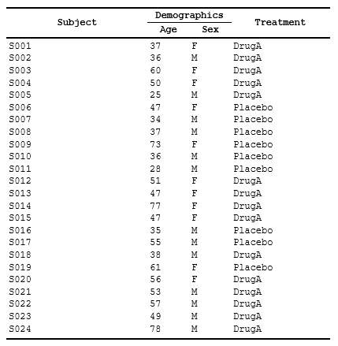
Example 1b: Using tidyselect helpers with spanning headers
add_span_header() supports all tidyselect expressions —
use helpers for flexible column selection:
# Table with mixed column types
mixed_data <- data.frame(
id = 1:10,
age_baseline = rnorm(10, 45, 10),
age_follow = rnorm(10, 46, 10),
weight_baseline = rnorm(10, 70, 10),
weight_follow = rnorm(10, 71, 10)
)
spec_tidysel <- create_table(mixed_data)
# Using starts_with() helper
spec_tidysel <- add_span_header(spec_tidysel,
cols = starts_with("age"),
label = "Age Measurements",
stubOrder = 1) |>
# Using col position
add_span_header(cols = c(4,5),
label = "Weight Measurements",
stubOrder = 1) |>
# Using negation (-) to exclude columns
add_span_header(cols = -id,
label = "Baseline and Follow",
stubOrder = 2)
print(spec_tidysel)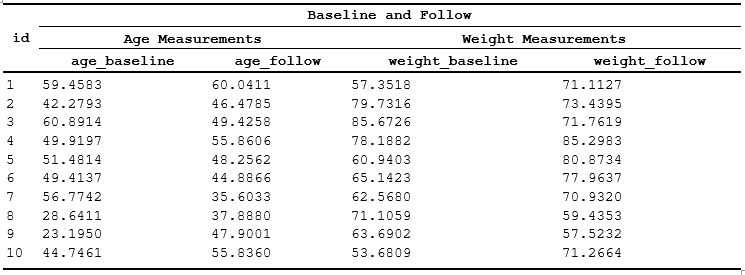
Tidyselect expressions supported:
- Ranges: cols = age:weight (all
columns between age and weight)
- Helpers: cols = starts_with("age"),
contains("baseline"), matches("^w")
- Negation: cols = -id (all columns
except id)
- Combinations:
cols = c(starts_with("age"), weight_baseline)
Example 2: Styled spanning headers
Apply styles to stub labels using labelStyleRef:
# First, create a style for stub labels
spec_spans_style <- create_table(data = demog_tbl, cols = c(subject_id, age, sex, trt))
spec_spans_style <- add_style(spec_spans_style,
id = "span_header",
s_font(bold = TRUE, font_size = "12pt"),
s_paragraph(alignment = "center"),
s_table_style(background_color = "#E8E8E8"))
# Define columns
spec_spans_style <- define_cols(spec_spans_style,
c(subject_id, age, sex, trt),
label = c("Subject ID", "Age", "Sex", "Treatment"),
valueStyleRef = 'ac')
# Add span with style reference
spec_spans_style <- add_span_header(spec_spans_style,
cols = c("age", "sex"),
label = "Demographics",
labelStyleRef = "span_header")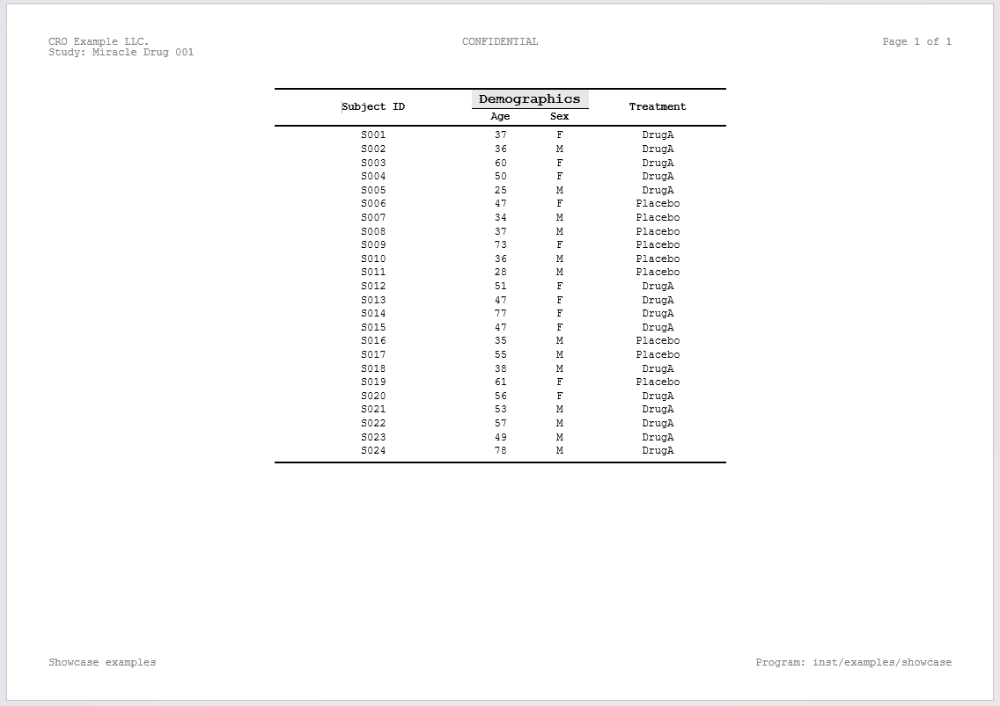
Notes:
- labelStyleRef can be a single style name or multiple
styles combined with f_combine()
- Span labels inherit the applied style, making grouped columns visually distinct
- Styles must be defined before referencing them in
add_span_header()
# Render stubbed table report to DOCX
rpt_stub <- create_report(spec_stubs_style)
write_doc(rpt_stub, name = "tbl_stub", outDir = "./out", metaPath = tempdir())10 — Styles and f_combine() for combined style
references
Why named styles?
Styles are foundational in professional reporting:
- Define once, reference many times — consistency across your document
- Easy to update: change one style definition and all references automatically pick up the change
- Composable: combine base styles (bold, red text) into complex styles for specific use cases
ksTFL uses a named style system: you define styles
with add_style() giving each an id, then
reference them by name wherever you need them
(labelStyleRef, valueStyleRef,
labelStyleRef in stubs, etc.).
Example 1: Define base styles
Create atomic styles that focus on one aspect (font, alignment, color):
# Create a table spec
spec_base_styles <- create_table(data = demog_tbl, cols = c(subject_id, age, sex, trt))
# Define reusable base styles
spec_base_styles <- add_style(spec_base_styles, id = "bold_header",
s_font(bold = TRUE, font_size = "12pt"))
spec_base_styles <- add_style(spec_base_styles, id = "right_align",
s_paragraph(alignment = "right"))
spec_base_styles <- add_style(spec_base_styles, id = "light_gray_bg",
s_table_style(background_color = "#F5F5F5"))
# Apply to columns
spec_base_styles <- define_cols(spec_base_styles,
c(subject_id, age, sex, trt),
label = c("Subject ID", "Age", "Sex", "Treatment"),
labelStyleRef = c("bold_header", "", "", ""))
print(spec_base_styles)
# close example chunkExample 2: Combine styles with f_combine()
Apply multiple styles to a single element using
f_combine() — they merge at render time:
# Create spec and define base styles
spec_combined <- create_table(data = demog_tbl, cols = c(subject_id, age, sex, trt))
# Define atomic styles
spec_combined <- add_style(spec_combined, id = "bold_text", s_font(bold = TRUE))
spec_combined <- add_style(spec_combined, id = "red_color", s_font(color = "#CC0000"))
spec_combined <- add_style(spec_combined, id = "centered", s_paragraph(alignment = "center"))
# Combine styles: bold + red text + centered
spec_combined <- define_cols(spec_combined,
subject_id,
label = "Subject ID",
labelStyleRef = f_combine("bold_text", "red_color", "centered")) |>
define_cols(c(sex, trt),
label=c('Sex', 'Treatment'),
labelStyleRef = f_combine('b','i'),
valueStyleRef = f_combine('ar', 'i')
) |>
# Different columns can use different combinations
define_cols(age, label = "Age",
labelStyleRef = f_combine("bold_text", "centered"),
valueStyleRef = 'ac')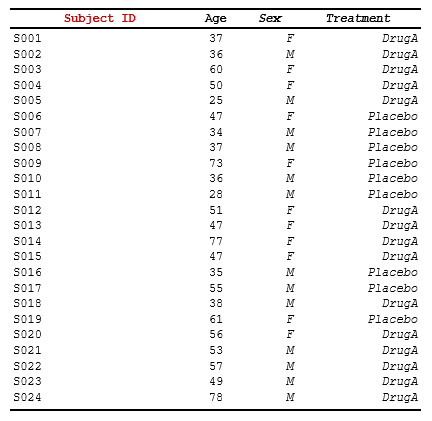
How f_combine() works:
- Takes multiple style names as arguments
- Returns a reference object that tells the package to merge those styles
- Order matters for last-win conflict resolution (later arguments override earlier ones)
11 — Conditional row actions with compute_cols()
Overview: While define_cols() sets
properties globally for all rows, compute_cols() applies
conditional actions to specific rows matching a
condition.
Common use cases:
- Style rows where a specific value occurs (e.g., first/last occurrence, threshold-based)
- Merge columns in certain rows (e.g., group headers)
- Insert separator or summary rows programmatically
Example 1: Conditional styling
Apply a style to columns in rows matching a condition:
# Sample data with groups
data <- data.frame(
group = c("A", "A", "B", "B", "C"),
metric = c("Value 1", "Value 2", "Value 3", "Value 4", "Value 5"),
count = c(10, 20, 15, 25, 30)
)
# Create spec and define styles
spec <- create_table(data) |>
add_style(id = "group_header", s_font(bold = TRUE, color = "#0000FF")) |>
add_style(id = "emphasize", s_table_style(background_color = "#FFFFCC"))
# Apply conditional styling: bold+blue for first occurrence of each group
spec <- spec |>
compute_cols(firstOf(group), c_style(c(metric, count), styleRef = "group_header"))
# Apply conditional styling: highlight rows with high count
spec <- spec |>
compute_cols(count > 20, c_style(count, styleRef = "emphasize"))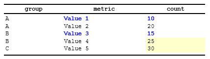
Example 2: Combining styles in conditional rows
Apply multiple styles to a single column using
f_combine():
spec <- create_table(data) |>
add_style(id = "bold", s_font(bold = TRUE)) |>
add_style(id = "large", s_font(font_size = "14pt")) |>
add_style(id = "highlight", s_table_style(background_color = "#FFFF00"))
# Apply combined styles to first group occurrence
spec <- spec |>
compute_cols(firstOf(group),
c_style(metric, styleRef = f_combine("bold", "large", "highlight"))
)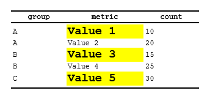
Example 3: Column merging in conditional rows
Merge adjacent columns for rows matching a condition:
spec <- create_table(data) |>
add_style(id = "group_label", s_table_style(background_color = "#D9D9D9"))
# Merge metric and count columns for first occurrence (group header style)
spec <- spec |>
compute_cols(firstOf(group),
c_merge(c(metric, count), styleRef = "group_label")
)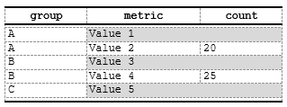
Example 4: Inserting separator rows
Insert empty rows (separators) or rows with content from another column:
spec <- create_table(data) |>
add_style(id = "separator", s_table_style(background_color = "#E8E8E8"))
# Insert empty separator above first group occurrence
spec <- spec |>
compute_cols(firstOf(group),
c_addrow(pos = "above") # Empty row, no value_from
)
# Insert summary row below last group occurrence (using a specific column as content)
spec <- spec |>
compute_cols(lastOf(group),
c_addrow(pos = "below", value_from = "group", styleRef = "separator")
)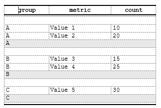
Example 4b: Page break insertion
Force a page break when a group ends (useful for long groups):
spec <- spec |>
compute_cols(lastOf(group),
c_pageBreak()
)Example 5: Multiple actions on same rows
Combine styling, merging, and row insertion in a single
compute_cols() call:
spec <- create_table(data) |>
add_style(id = "header", s_font(bold = TRUE)) |>
add_style(id = "separator", s_table_style(background_color = "#E8E8E8"))
# For first group occurrence: add separator, style, and merge
spec <- spec |>
compute_cols(firstOf(group),
c_addrow(pos = "above"), # Add empty separator
c_style(metric, styleRef = "header"), # Style metric column
c_merge(c(metric, count)) # Merge adjacent columns
)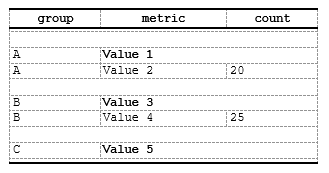
Key concepts:
- Conditions are unevaluated expressions evaluated
at report generation time (during create_report())
- Helper functions (firstOf(),
lastOf(), firstRow(), lastRow(),
rowNumber(), everyNth(),
firstOfBlock()) are only available inside
compute_cols() conditions — they are not
standalone exported functions. See
vignette("Advanced_StyleRows") for full details.
- Multiple calls accumulate: calling
compute_cols() multiple times on the same spec appends
actions
- Multiple actions in one call: same row can have styling, merging, and row insertion simultaneously
- Overlapping conditions: if multiple conditions
match the same row, all actions apply (styling aggregates, merging rules
apply) - value_from: Optional in
c_addrow() — omit for empty separator rows
- Performance: Conditions evaluated once per row during report assembly; style consolidation happens automatically
12 — Render to DOCX with write_doc()
What write_doc() does
write_doc() is the primary output function. It combines
two lower-level steps into one:
-
Validates and serializes the report to JSON,
writing metadata and data files to
metaPath -
Renders the JSON to a DOCX file in
outDir
create_report() → write_doc() → output.docxExample: Assemble and render a multi-spec report
Tip: Use
tfl_list_templates()to discover available template names (e.g.,"Navy_Pro","Carbon_Dark"). Userun_styles_editor()to interactively preview and customize templates.
# Create multiple specs
table_spec <- create_table(data = labs_tbl, cols = c(subject_id, ALT, AST))
table_spec <- add_title(table_spec, "Laboratory Results")
table_spec <- set_page_style(table_spec, docTemplate = "Navy_Pro")
text_spec <- create_text()
text_spec <- add_body_text(text_spec, "All values are from the locked database.")
text_spec <- set_page_style(text_spec, docTemplate = "Carbon_Dark")
# Assemble into report
report_full <- create_report(table_spec, text_spec)
# A) Per-spec templates (default): each spec uses its own docTemplate
write_doc(report_full, name = "example_report", outDir = "./out", metaPath = tempdir())
# B) Global override: force one template for all specs
write_doc(
report_full,
name = "example_report_global_override",
outDir = "./out",
metaPath = tempdir(),
overrideTemplate = system.file("templates", "Navy_Pro.json", package = "ksTFL", mustWork = TRUE)
)In this workflow:
-
write_doc(..., overrideTemplate = NULL)keeps per-specdocTemplatestyling. -
write_doc(..., overrideTemplate = <name_or_path>)applies a single global template to all specs.
Key parameters: - report: A
TFL_report object (created via
create_report()) - name: Base name for the
output DOCX (e.g. "example_report" →
example_report.docx) - outDir: Directory where
the output DOCX is written - metaPath: Directory where
intermediate JSON and data files are written
Advanced: If you need to inspect the JSON before
rendering (e.g. for debugging or CI pipelines), you can split the call
into save_report() + replay_report(). See
?write_doc and ?replay_report for details.
13 — Session-wide tfl_options: common headers/footers
and default body text
Why session options?
In a real clinical reporting workflow, many tables/listings share: - Common headers (study name, database version, confidentiality notice) - Common footers (company name, page numbers, disclaimers) - Default body text (standard disclaimers or methodology notes)
Instead of adding these to every spec, use
tfl_set_options() to set session defaults once. All specs
created afterward inherit these settings.
Example 1: Set basic session options
# Set session defaults (applies to all NEW specs created after this call)
tfl_set_options(
add_header("Study ABC", "Phase II Safety Study", "CONFIDENTIAL"),
add_footer("Company Confidential", "Page {PAGE} of {NUMPAGES}")
)
# Create spec — automatically inherits headers/footers from options
spec_with_opts <- create_table(data = demog_tbl, cols = c(subject_id, age, sex, trt))
spec_with_opts <- add_title(spec_with_opts, "Demographics Table")
print(spec_with_opts)
# close example chunkKey point: Headers and footers from
tfl_set_options() are automatically applied to new specs.
No need to call add_header() again.
Example 2: Override session options in a specific spec
You can override session defaults on individual specs:
# Session options are still in effect from previous example
# Create a spec with session defaults
spec_default <- create_table(data = labs_tbl, cols = c(subject_id, ALT, AST))
spec_default <- add_title(spec_default, "Lab Results (using session defaults)")
# Create another spec but override the header
spec_override <- create_table(data = demog_tbl, cols = c(subject_id, age))
spec_override <- add_header(spec_override, "Study XYZ", "Different Study", "CONFIDENTIAL") # Overrides session default
spec_override <- add_title(spec_override, "Demographics (custom header)")
print(spec_default) # Uses session header from tfl_set_options
print(spec_override) # Uses custom header from add_header call
# close example chunkRule: Spec-level settings always take precedence over session defaults (last-win strategy).
Example 3: Check and reset session options
Inspect current session options and reset to defaults:
# Check current options
current_options <- tfl_get_options()
str(current_options)
# Get a single option
current_missings <- tfl_get_option("missings")
cat("Current missings representation:", current_missings, "\n")
# Reset to package defaults
tfl_reset_options()
# Now new specs will use package defaults instead of your custom session options
spec_reset <- create_table(data = demog_tbl, cols = c(subject_id, age))
print(spec_reset)
# close example chunkFinal notes
This comprehensive vignette demonstrates the complete ksTFL reporting pipeline using only exported helpers.
Examples covered: 1. Minimal table/figure/text
creation (single-spec workflows) 2. Define columns:
Single column, batch updates, parameter recycling (NEW) 3. Column
widths: Auto-calculation, locking, mixed units (NEW) 4. Multi-level
tables with titles, subtitles, and footnotes 5. Combining multiple specs
into a report 6. Spanning headers (stub columns) with styling 7. Named
styles and combining with f_combine() (expanded) 8.
End-to-end render with write_doc() 9. Session defaults with
tfl_set_options()
Key patterns to remember: - Batch
operations: Use c() to select multiple columns,
provide single values (recycled) or N values (one-to-one mapping) -
Multiple calls: Chain define_cols(),
add_style(), etc. — each call merges with previous settings
- Flexible column widths: Auto-calculated by default;
lock specific columns with colWidth to trigger
recalculation of others - Combining styles: Use
f_combine() for on-the-fly combinations; define named
styles for reuse - Session defaults: Use
tfl_set_options() once; all new specs inherit settings
(override per-spec if needed)
Running examples locally: Set the top chunk
eval=TRUE to generate sample data, then execute examples in
order. All code uses exported functions only — no internal API
manipulation needed.
For more details on function parameters, see the roxygen
documentation: ?create_table, ?define_cols,
?add_style, ?write_doc, etc.